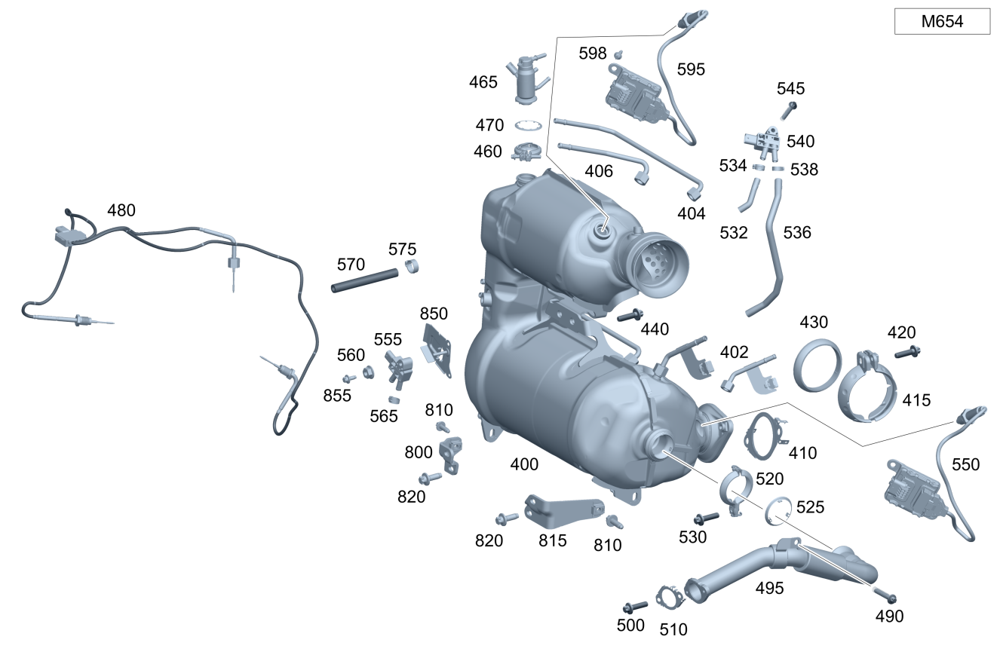

| № | Артикул | Название | Кол. | Примечание |
|---|---|---|---|---|
| 202 | A 213 906 86 01 | - Регулятор засл.вып.тракт. (EXH. GAS FLAP CONTROLLER) | 1 | Заслонка в выпускном тракте |
| 202 | A 213 906 92 10 | - Регулятор засл.вып.тракт. (EXH. GAS FLAP CONTROLLER) | 1 | Заслонка в выпускном тракте |
| 204 | A 000 998 35 07 | - Демпфирующий элемент (DAMPING ELEMENT) | 1 | Сервомеханизм заслонки |
| 206 | A 000 990 61 37 | - Винт с 6-гр. глвк (HEXALOBULAR SCREW) | 3 | Сервопривод заслонки к трубопроводу ОГ; M6X16 |
| 240 | A 247 492 24 00 | Держатель (HOLDER) | 1 | Датчик оксидов азота |
| 240 | A 247 492 24 00 | Держатель (HOLDER) | 1 | Датчик оксидов азота |
| 240 | A 247 492 24 00 | Держатель (HOLDER) | 1 | Датчик оксидов азота |
| 240 | A 247 492 47 00 | Держатель (HOLDER) | 1 | Датчик оксидов азота |
| 245 | A 202 990 03 17 | Винт с шестигр. головкой (HEXAGON HEAD SCREW) | 2 | Датчик NOx к кронштейну; M6X19 |
| 245 | A 202 990 03 17 | Винт с шестигр. головкой (HEXAGON HEAD SCREW) | 2 | Крепление кронштейна датчика NOX; M6X19 |
| 245 | A 202 990 03 17 | Винт с шестигр. головкой (HEXAGON HEAD SCREW) | 2 | Крепление кронштейна датчика NOX; M6X19 |
| 245 | A 202 990 03 17 | Винт с шестигр. головкой (HEXAGON HEAD SCREW) | 2 | Крепление кронштейна датчика NOX; M6X19 |
| 250 | A 202 990 03 17 | Винт с шестигр. головкой (HEXAGON HEAD SCREW) | 2 | Крепление кронштейна датчика NOX; M6X19 |
| 250 | A 202 990 03 17 | Винт с шестигр. головкой (HEXAGON HEAD SCREW) | 2 | Крепление кронштейна датчика NOX; M6X19 |
| 250 | A 202 990 03 17 | Винт с шестигр. головкой (HEXAGON HEAD SCREW) | 2 | Крепление кронштейна датчика NOX; M6X19 |
| 270 | A 247 492 02 00 | Держатель (HOLDER) | 1 | Выпускная система спереди |
| 270 | A 247 492 40 00 | Держатель (HOLDER) | 1 | Выпускная система спереди |
| 275 | N 000000 003175 | Гайка (NUT) | 2 | Выпускная труба (передняя) к интегральной балке; M8 |
| 275 | N 000000 008303 | Шестигранная гайка (HEXAGON NUT) | 2 | Выпускная труба (передняя) к интегральной балке; M8 |
| 275 | N 000000 008303 | Шестигранная гайка (HEXAGON NUT) | 2 | Выпускная труба (передняя) к интегральной балке; M8 |
| 280 | A 247 492 03 00 | Держатель (HOLDER) | 1 | Выпускная система посередине |
| 285 | A 247 492 14 00 | Держатель (HOLDER) | 1 | Выпускная система сзади |
| 305 | N 000000 000276 | Винт с 6-гр. глвк (HEXALOBULAR SCREW) | 1 | Выпускная система к кузову; M8X20 |
| 305 | N 910143 008003 | Винт с 6-гр. глвк (HEXALOBULAR SCREW) | 1 | Выпускная система к кузову; M8X30 |
| 310 | A 247 492 04 00 | Держатель (HOLDER) | 1 | Выпускная система сзади |
| 315 | A 231 492 00 44 | Подвес трубопровода ОГ (SUSPENSION, EXH. GAS LINE) | 1 | Выпускная система сзади |
| 400 | A 654 140 87 01 | Трубка выпуска ОГ (EXHAUST GAS LINE) | 1 | Спереди |
| 400 | A 654 140 15 00 | Трубка выпуска ОГ | 1 | Спереди |
| 402 | A 654 140 86 00 | - Напорный трубопровод (PRESSURE LINE) | 1 | Катализатор спереди |
| 404 | A 654 140 85 00 | - Напорный трубопровод (PRESSURE LINE) | 1 | Каталитический нейтрализатор ОГ (боковая сторона) |
| 406 | A 654 140 84 00 | - Напорный трубопровод (PRESSURE LINE) | 1 | Катализатор, сзади |
| 410 | A 177 492 04 00 | Многоканальное уплотнение (MULTI-HOLE SEAL) | 1 | Выпускная труба спереди к выпускной трубе посередине |
| 415 | A 203 490 04 41 | Трубн. хомут сист.вып. ОГ (PIPE CLAMP, EXHAUST SYS.) | 1 | Выпускная система к турбокомпрессору |
| 420 | A 000 990 46 37 | Винт с 6-гр. глвк (HEXALOBULAR SCREW) | 1 | Выпускная система к турбокомпрессору; M8X40 |
| 430 | A 000 492 00 00 | Упл. кольцо вып. системы (SEALING RING) | 1 | Выпускная система к турбокомпрессору |
| 440 | N 000000 000276 | Винт с 6-гр. глвк (HEXALOBULAR SCREW) | 2 | Выпускная система к блоку цилиндров; M8X20 |
| 440 | N 000000 000276 | Винт с 6-гр. глвк (HEXALOBULAR SCREW) | 2 | Выпускная система к блоку цилиндров; M8X20 |
| 460 | A 000 995 58 33 | Хомут, двухсоставный (PROFILE CLAMP, TWO-PIECE) | 1 | ФОРСУНКА К ПЕРЕДН.ВЫПУСКНОЙ ТРУБЕ |
| 460 | A 000 995 58 33 | Хомут, двухсоставный (PROFILE CLAMP, TWO-PIECE) | 1 | ФОРСУНКА К ПЕРЕДН.ВЫПУСКНОЙ ТРУБЕ |
| 465 | A 000 490 40 00 | Форсунка впрыска восст. (INJECTION NOZZLE) | 1 | Форсунка впрыска мочевины (система SCR) |
| 470 | A 000 492 01 56 | - Профильное уплотнение (PROFILE SEAL) | 1 | МЕЖДУ ФОРСУНКОЙ И ПЕРЕДН. ВЫПУСКНОЙ ТРУБОЙ |
| 470 | A 000 492 01 56 | - Профильное уплотнение (PROFILE SEAL) | 1 | МЕЖДУ ФОРСУНКОЙ И ПЕРЕДН. ВЫПУСКНОЙ ТРУБОЙ |
| 480 | A 000 905 16 13 | Датчик температуры (TEMPERATURE SENSOR) | 1 | |
| 490 | N 910143 006001 | Винт с 6-гр. глвк (HEXALOBULAR SCREW) | 1 | Система рециркуляции ОГ к держателю; M6X16 |
| 490 | N 910143 006001 | Винт с 6-гр. глвк (HEXALOBULAR SCREW) | 1 | Система рециркуляции ОГ к держателю; M6X16 |
| 495 | A 654 140 10 60 | Труб. рецирк. ОГ (EXHAUST GAS RECIRC. LINE) | 1 | К модулю рециркуляции ОГ |
| 500 | A 000 990 69 03 | Винт Torx External (HEXALOBULAR HEAD SCREW) | 2 | Трубопровод рециркуляции ОГ к радиатору; M6X16 |
| 500 | A 000 990 69 03 | Винт Torx External (HEXALOBULAR HEAD SCREW) | 2 | Трубопровод рециркуляции ОГ к радиатору; M6X16 |
| 510 | A 654 142 07 00 | Прокладка, однослойная (METAL SEAL, SINGLE LAYER) | 1 | Трубопровод рециркуляции ОГ |
| 510 | A 654 142 07 00 | Прокладка, однослойная (METAL SEAL, SINGLE LAYER) | 1 | Трубопровод рециркуляции ОГ |
| 520 | A 003 995 04 02 | Трубн. хомут сист.вып. ОГ (PIPE CLAMP, EXHAUST SYS.) | 1 | Трубопровод рециркуляции ОГ к выпускной системе |
| 520 | A 003 995 04 02 | Трубн. хомут сист.вып. ОГ (PIPE CLAMP, EXHAUST SYS.) | 1 | Трубопровод рециркуляции ОГ к выпускной системе |
| 525 | A 654 142 19 80 | - Прокладка, однослойная (METAL SEAL, SINGLE LAYER) | 1 | Трубопровод рециркуляции ОГ |
| 530 | A 003 990 47 03 | Винт Torx External (HEXALOBULAR HEAD SCREW) | 1 | Трубопровод рециркуляции ОГ к выпускной системе; M6X25 |
| 530 | A 003 990 47 03 | Винт Torx External (HEXALOBULAR HEAD SCREW) | 1 | Трубопровод рециркуляции ОГ к выпускной системе; M6X25 |
| 532 | A 654 141 04 04 | Трубка выпуска ОГ (EXHAUST GAS LINE) | 1 | Воздуховод очищенного воздуха к дифференциальному датчику давления |
| 534 | A 003 997 87 90 | Хомут для шланга (HOSE CLAMP) | 2 | Шланговые хомуты; 13.5 MM |
| 536 | A 654 141 05 04 | Трубка выпуска ОГ (EXHAUST GAS LINE) | 1 | Секция контура рециркуляции ОГ к датчику перепада давления |
| 538 | A 003 997 87 90 | Хомут для шланга (HOSE CLAMP) | 2 | Шланговые хомуты; 13.5 MM |
| 540 | A 651 905 03 00 | Датчик давления (PRESSURE SENSOR) | 1 | Датчик давления системы рециркуляции ОГ |
| 540 | A 000 905 39 13 | Датчик давления (PRESSURE SENSOR) | 1 | Датчик давления системы рециркуляции ОГ |
| 540 | A 000 905 71 13 | Датчик давления (PRESSURE SENSOR) | 1 | Датчик давления системы рециркуляции ОГ |
| 545 | N 910143 006004 | Винт с 6-гр. глвк (HEXALOBULAR SCREW) | 1 | Крепление датчика давления; M6X30 |
| 550 | A 000 905 30 19 | Датчик NOx (NOX SENSOR) | 1 | После катализатора |
| 555 | A 000 905 65 03 | Датчик давления (PRESSURE SENSOR) | 1 | Датчик давления сажевого фильтра |
| 555 | A 000 905 53 07 | Датчик давления (PRESSURE SENSOR) | 1 | Датчик давления сажевого фильтра |
| 560 | A 000 990 43 37 | Шестигранная гайка (HEXAGON NUT) | 1 | Крепление дифференциального датчика давления; M6 |
| 560 | N 000000 008290 | Шестигранная гайка (HEXAGON NUT) | 1 | Крепление дифференциального датчика давления; M6 |
| 565 | A 003 997 87 90 | Хомут для шланга (HOSE CLAMP) | 2 | Шланги к датчику давления; 13.5 MM |
| 570 | A 654 141 12 00 | Формовый шланг (MOLDED HOSE) | 1 | НАПОРНЫЙ ТРУБОПРОВОД К ДАТЧИКУ ДАВЛЕНИЯ 117.3MM |
| 570 | A 654 141 11 00 | Формовый шланг (MOLDED HOSE) | 1 | НАПОРНЫЙ ТРУБОПРОВОД К ДАТЧИКУ ДАВЛЕНИЯ 90.3MM |
| 575 | A 003 997 87 90 | Хомут для шланга (HOSE CLAMP) | 2 | Шланг к напорному трубопроводу; 13.5 MM |
| 595 | A 000 905 31 19 | Датчик NOx (NOX SENSOR) | 1 | перед каталитическим нейтрализатором ОГ |
| 598 | N 910143 006001 | Винт с 6-гр. глвк (HEXALOBULAR SCREW) | 2 | M6X16 |
| 600 | A 177 490 34 01 | Система выпуска ОГ (EXHAUST SYSTEM) | 1 | Посередине |
| 600 | A 177 490 36 01 | Система выпуска ОГ (EXHAUST SYSTEM) | 1 | Посередине |
| 600 | A 177 490 35 01 | Система выпуска ОГ (EXHAUST SYSTEM) | 1 | Посередине |
| 602 | A 213 906 86 01 | - Регулятор засл.вып.тракт. (EXH. GAS FLAP CONTROLLER) | 1 | Заслонка в выпускном тракте |
| 602 | A 213 906 92 10 | - Регулятор засл.вып.тракт. (EXH. GAS FLAP CONTROLLER) | 1 | Заслонка в выпускном тракте |
| 604 | A 000 998 35 07 | - Демпфирующий элемент (DAMPING ELEMENT) | 1 | Сервомеханизм заслонки |
| 606 | A 000 990 61 37 | - Винт с 6-гр. глвк (HEXALOBULAR SCREW) | 3 | Сервопривод заслонки к трубопроводу ОГ; M6X16 |
| 606 | A 000 990 61 37 | - Винт с 6-гр. глвк (HEXALOBULAR SCREW) | 3 | Сервопривод заслонки к трубопроводу ОГ; M6X16 |
| 608 | A 177 492 04 00 | Многоканальное уплотнение (MULTI-HOLE SEAL) | 1 | Выпускная труба спереди к выпускной трубе посередине |
| 610 | A 177 490 48 01 | Система выпуска ОГ (EXHAUST SYSTEM) | 1 | Сзади |
| 610 | A 177 490 49 01 | Система выпуска ОГ (EXHAUST SYSTEM) | 1 | Сзади |
| 610 | A 177 490 49 01 | Система выпуска ОГ (EXHAUST SYSTEM) | 1 | Сзади |
| 610 | A 177 490 50 01 | Система выпуска ОГ (EXHAUST SYSTEM) | 1 | Сзади |
| 615 | A 000 905 71 07 | Датчик температуры (TEMPERATURE SENSOR) | 1 | |
| 615 | A 000 905 03 12 | Датчик температуры (TEMPERATURE SENSOR) | 1 | |
| 620 | A 646 150 00 73 | Держатель (HOLDER) | 1 | Крепление штекера датчика температуры |
| 625 | A 000 541 01 40 | Держатель (HOLDER) | 3 | Крепление провода датчика температуры; 18 X 24 MM |
| 625 | A 000 541 04 00 | Держатель (HOLDER) | 1 | Крепление провода датчика температуры |
| 630 | A 177 159 21 00 | Держатель (HOLDER) | 1 | Датчик температуры |
| 635 | A 000 905 62 07 | Датчик NOx (NOX SENSOR) | 1 | |
| 640 | A 247 492 24 00 | Держатель (HOLDER) | 1 | Датчик оксидов азота |
| 640 | A 247 492 24 00 | Держатель (HOLDER) | 1 | Датчик оксидов азота |
| 640 | A 247 492 24 00 | Держатель (HOLDER) | 1 | Датчик оксидов азота |
| 640 | A 247 492 47 00 | Держатель (HOLDER) | 1 | Датчик оксидов азота |
| 640 | A 247 492 47 00 | Держатель (HOLDER) | 1 | Датчик оксидов азота |
| 640 | A 247 492 47 00 | Держатель (HOLDER) | 1 | Датчик оксидов азота |
| 645 | A 202 990 03 17 | Винт с шестигр. головкой (HEXAGON HEAD SCREW) | 2 | Датчик NOx к кронштейну; M6X19 |
| 645 | A 202 990 03 17 | Винт с шестигр. головкой (HEXAGON HEAD SCREW) | 2 | Крепление кронштейна датчика NOX; M6X19 |
| 645 | A 202 990 03 17 | Винт с шестигр. головкой (HEXAGON HEAD SCREW) | 2 | Крепление кронштейна датчика NOX; M6X19 |
| 645 | A 202 990 03 17 | Винт с шестигр. головкой (HEXAGON HEAD SCREW) | 2 | Крепление кронштейна датчика NOX; M6X19 |
| 650 | A 202 990 03 17 | Винт с шестигр. головкой (HEXAGON HEAD SCREW) | 2 | Крепление кронштейна датчика NOX; M6X19 |
| 650 | A 202 990 03 17 | Винт с шестигр. головкой (HEXAGON HEAD SCREW) | 2 | Крепление кронштейна датчика NOX; M6X19 |
| 650 | A 202 990 03 17 | Винт с шестигр. головкой (HEXAGON HEAD SCREW) | 2 | Крепление кронштейна датчика NOX; M6X19 |
| 650 | A 202 990 03 17 | Винт с шестигр. головкой (HEXAGON HEAD SCREW) | 2 | Крепление кронштейна датчика NOX; M6X19 |
| 650 | A 202 990 03 17 | Винт с шестигр. головкой (HEXAGON HEAD SCREW) | 2 | Крепление кронштейна датчика NOX; M6X19 |
| 650 | A 202 990 03 17 | Винт с шестигр. головкой (HEXAGON HEAD SCREW) | 2 | Крепление кронштейна датчика NOX; M6X19 |
| 650 | A 202 990 03 17 | Винт с шестигр. головкой (HEXAGON HEAD SCREW) | 2 | Крепление кронштейна датчика NOX; M6X19 |
| 660 | A 000 990 68 03 | Винт Torx External (HEXALOBULAR HEAD SCREW) | 2 | Передняя часть выпускной системы к средней части выпускной системы; M8X25 |
| 705 | N 000000 000276 | Винт с 6-гр. глвк (HEXALOBULAR SCREW) | 1 | Выпускная система к кузову; M8X20 |
| 705 | N 910143 008003 | Винт с 6-гр. глвк (HEXALOBULAR SCREW) | 1 | Выпускная система к кузову; M8X30 |
| 707 | A 247 492 04 00 | Держатель (HOLDER) | 1 | Выпускная система сзади |
| 707 | A 247 492 04 00 | Держатель (HOLDER) | 1 | Выпускная система сзади |
| 709 | A 231 492 00 44 | Подвес трубопровода ОГ (SUSPENSION, EXH. GAS LINE) | 1 | Выпускная система сзади |
| 709 | A 231 492 00 44 | Подвес трубопровода ОГ (SUSPENSION, EXH. GAS LINE) | 1 | Выпускная система сзади |
| 710 | A 247 492 03 00 | Держатель (HOLDER) | 1 | Выпускная система посередине |
| 710 | A 247 492 03 00 | Держатель (HOLDER) | 1 | Выпускная система посередине |
| 713 | N 000000 008303 | Шестигранная гайка (HEXAGON NUT) | 1 | Крепление держателя; M8 |
| 715 | A 247 492 14 00 | Держатель (HOLDER) | 1 | Выпускная система посередине |
| 715 | A 247 492 14 00 | Держатель (HOLDER) | 1 | Выпускная система посередине |
| 720 | A 247 492 02 00 | Держатель (HOLDER) | 1 | Выпускная система спереди |
| 720 | A 247 492 40 00 | Держатель (HOLDER) | 1 | Выпускная система спереди |
| 720 | A 247 492 40 00 | Держатель (HOLDER) | 1 | Выпускная система спереди |
| 725 | N 000000 003175 | Гайка (NUT) | 2 | Выпускная труба (передняя) к интегральной балке; M8 |
| 725 | N 000000 008303 | Шестигранная гайка (HEXAGON NUT) | 2 | Выпускная труба (передняя) к интегральной балке; M8 |
| 725 | N 000000 008303 | Шестигранная гайка (HEXAGON NUT) | 2 | Выпускная труба (передняя) к интегральной балке; M8 |
| 750 | A 000 995 46 02 | Трубн. хомут сист.вып. ОГ (PIPE CLAMP, EXHAUST SYS.) | 1 | Выпускная труба спереди к выпускной трубе сзади; Ø 55 MM |
| 750 | A 000 995 47 02 | Трубн. хомут сист.вып. ОГ (PIPE CLAMP, EXHAUST SYS.) | 1 | Выпускная труба спереди к выпускной трубе сзади; Ø 65 MM |
| 775 | A 654 159 78 00 | Держатель (HOLDER) | 1 | Датчик температуры |
| 780 | A 000 990 36 62 | Пластмассовая гайка (PLASTIC NUT) | 2 | Крепление держателя |
| 785 | A 003 988 87 78 | Скоба (CLAMP) | 1 | Крепление трубопровода |
| 790 | N 000000 008290 | Шестигранная гайка (HEXAGON NUT) | 3 | Крепление держателя; M6 |
| 800 | A 654 142 76 00 | Держатель (HOLDER) | 1 | на блоке цилиндров (правая сторона) |
| 800 | A 654 142 76 00 | Держатель (HOLDER) | 1 | на блоке цилиндров (правая сторона) |
| 810 | N 000000 000276 | Винт с 6-гр. глвк (HEXALOBULAR SCREW) | 2 | Кронштейн к системе выпуска ОГ; M8X20 |
| 815 | A 654 142 75 00 | Держатель (HOLDER) | 1 | на блоке цилиндров (левая сторона) |
| 815 | A 654 142 75 00 | Держатель (HOLDER) | 1 | на блоке цилиндров (левая сторона) |
| 820 | N 000000 000276 | Винт с 6-гр. глвк (HEXALOBULAR SCREW) | 4 | Держатель к блоку цилиндров; M8X20 |
| 820 | N 000000 000276 | Винт с 6-гр. глвк (HEXALOBULAR SCREW) | 4 | Держатель к блоку цилиндров; M8X20 |
| 850 | A 654 142 74 00 | Держатель (HOLDER) | 1 | Датчик давления сажевого фильтра |
| 850 | A 654 142 96 00 | Держатель (HOLDER) | 1 | Датчик давления сажевого фильтра |
| 855 | N 910143 006000 | Винт с 6-гр. глвк (HEXALOBULAR SCREW) | 1 | Крепление дифференциального датчика давления; M6X12 |
| 855 | N 910143 006000 | Винт с 6-гр. глвк (HEXALOBULAR SCREW) | 1 | Крепление дифференциального датчика давления; M6X12 |
Позиций: 146 · подписано на схемах: 146 · колесо — плавный зум в курсор, перетаскивание — пан, двойной клик — зум, клик по артикулу — скопировать.